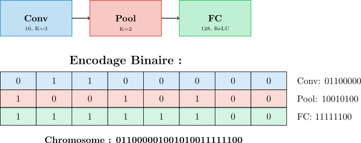
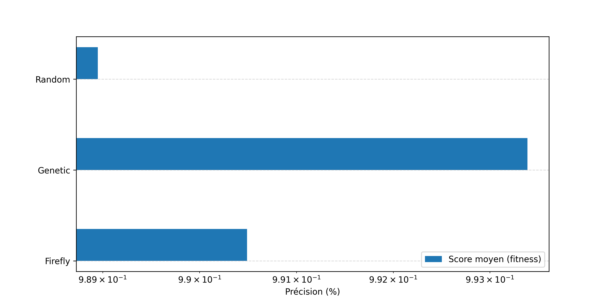
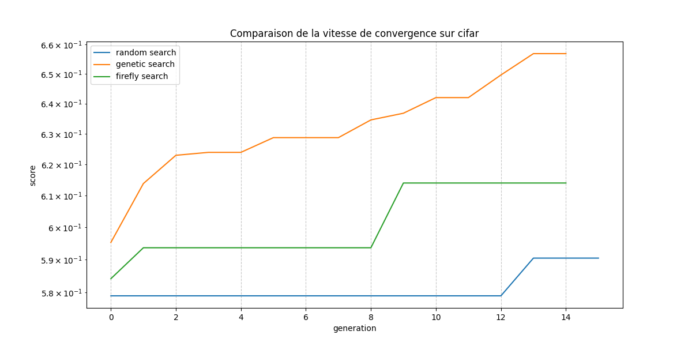

Resumé : Dans ce travail, nous avons exploré une approche hybride pour l’optimisation des
architectures de réseaux de neurones convolutionnels (CNN), combinant la recherche
d’architecture neuronale (NAS) avec des algorithmes métaheuristiques inspirés des
comportements naturels, en particulier l’algorithme génétique et l’algorithme Firefly. Après
avoir défini un espace de recherche structuré pour les hyperparamètres architecturaux des
CNNs, nous avons détaillé les mécanismes d’encodage, de sélection, de croisement et de
mutation propres à chaque méthode. Les expériences menées sur les jeux de données MNIST
et CIFAR-10 montrent que les approches métaheuristiques surpassent significativement la
recherche aléatoire, tant en termes de précision que de capacité de généralisation.
L’algorithme génétique, en particulier, se distingue par sa robustesse et son efficacité,
démontrant l’intérêt des stratégies hybrides pour l’optimisation automatique des architectures
de réseaux de neurones profonds.Notre implémentation complète de ces algorithmes est
disponible sur GitHub au lien :
https://github.com/bechirousmane/Optimization-of-CNN-using-NAS-and-Metaheuristics
Mots clés: NAS, CNN, optimisation, hyperparamètres, intelligence en essaim, algorithmes
évolutionnaires, métaheuristiques
Les réseaux de neurones convolutionnels (CNN [?]) ont démontré une efficacité remarquable dans des
nombreuses tâches de vision par ordinateur, telles que la classification d’images, la détection des objets ou la
segmentation sémantique. Cependant, les performances de ces modèles dépendent fortement de choix de leur
configuration interne, notamment des hyperparamètres qui régissent leur structure et leur fonctionnement.
Des méthodes classiques d’optimisation, telles que la recherche par grille(grid search) ou la recherche
aléatoire(random search) [?] ainsi que des approches probabilistes plus avancées comme l’optimisation
bayésienne [?] sont souvent employées pour régler ces hyperparamètres. Cependant, elles ont une efficacité
très limité face à la complexité de l’espace de recherche, surtout dans le cadre de problèmes
NP-difficiles [?].
D’autres approches plus robustes et adaptées au problèmes NP-difficiles [?], telles que les algorithmes
évolutionnaires et les algorithmes basé sur l’intelligence en essaims ont été exploré. Parmi elles, ont retrouve
les algorithmes génétiques (GA) [?] l’algorithme de croissance d’arbres (Tree Growth Algorithm, TGA) [?],
l’optimisation par essaim de particules (Particle Swarm Optimization, PSO) [?] ou l’algorithme des lucioles
(Firefly Algorithm, FA) [?]. Ces approches ont montré des performances remarquables dans l’optimisation
des hyperparamètres. Dans la littérature, le terme ”hyperparamètre” désigne généralement des
paramètres réglés manuellement avant l’entraînement, tels que le taux d’apprentissage, la taille du
batch ou le nombre d’époques. Toutefois, un ensemble tout aussi crucial de paramètres concerne
directement l’architecture du modèle : le nombre de couches, le nombre de filtres par couche, la
taille des noyaux de convolution, ou encore le nombre de neurones dans les couches entièrement
connectées. Ces éléments, bien qu’ils déterminent la topologie du réseau, sont aussi considérés
comme des hyperparamètres dans un sens plus large, car ils influencent fortement la capacité
d’apprentissage du modèle tout en étant fixés avant l’entraînement. C’est dans ce contexte
que les approches de Neural Architecture Search (NAS) [?] ont émergé. Ces méthodes visent à
automatiser l’exploration de l’espace des architectures possibles pour trouver une configuration
optimale. Ces dernières années, NAS [?] s’est imposé comme une stratégie prometteuse pour
trouver des architectures optimales, notamment dans la classification d’images(Liu et al [?], Tan et
le [?]).
Dans ce travail, nous explorons une approche hybride de NAS combinée à des algorithmes métaheuristiques,
en particulier l’algorithme génétique et l’algorithme Firefly, afin d’optimiser les hyperparamètres structurels
des CNNs.
La recherche par grille est une méthode classique et l’une des plus anciennes employée pour l’optimisation des hyperparamètres. Elle est efficace lorsque l’espace de recherche est relativement petit et devient très gourmande quand l’espace devient grand. Une autre méthode combinatoire qui est la recherche aléatoire [?], est souvent utilisée. James et Bengio(2012) [?] ont montré empiriquement et théoriquement que la recherche aléatoire est plus efficace que la recherche par grille, notamment quand l’espace de recherche est relativement petit. L’optimisation bayésienne [?] est une méthode probabiliste sophistiqué basé sur le théorème de bayes. Les travaux de Wu et al [?]. ont montré que l’optimisation bayésienne basé sur le processus gaussien permet d’atteindre une grande précision(88,41% après 50 itérations) sur le jeu de données CIFAR-10 [?]. Les algorithmes méta-heuristiques tels que les algorithmes évolutionnaires ou les algorithmes basés sur l’intelligence en essaims sont plus robustes et mieux adaptés aux problèmes NP-difficiles [?]. Ces approches ont démontré leur efficacité dans l’optimisation des hyperparamètres des réseaux de neurones convolutionnels grâce à leur capacité à explorer efficacement des espaces de recherche complexes et non-convexes. Les algorithmes génétiques (GA) [?] constituent l’une des approches les plus établies dans le domaine de l’optimisation évolutionnaire. Xie et Yuille (2017) [?] ont proposé Genetic CNN, une approche qui utilise les principes évolutionnaires pour optimiser automatiquement les architectures de CNN. Leur méthode encode les architectures sous forme de chromosomes et applique des opérateurs de sélection, croisement et mutation pour explorer l’espace des architectures possibles. Cette approche a montré des résultats prometteurs sur les jeux de données CIFAR-10 et CIFAR-100. L’optimisation par essaim de particules (Particle Swarm Optimization, PSO) [?] s’inspire du comportement social des essaims d’oiseaux ou de poissons. Kennedy et Eberhart (1995) [?] ont introduit cette méthode qui a depuis été largement appliquée à l’optimisation des hyperparamètres des réseaux de neurones. PSO présente l’avantage de converger rapidement vers des solutions de qualité tout en maintenant une diversité dans la population de solutions. L’algorithme des lucioles (Firefly Algorithm, FA) [?] proposé par Yang (2009) s’inspire du comportement de clignotement des lucioles pour s’attirer mutuellement. Cet algorithme présente des caractéristiques intéressantes pour l’optimisation des CNN : il combine une exploration globale efficace avec une exploitation locale intensive. La nature décentralisée de FA permet une parallélisation naturelle, ce qui est particulièrement avantageux pour l’optimisation coûteuse des architectures de réseaux de neurones. Zoph et Le (2016) [?] ont introduit le concept de NAS en utilisant l’apprentissage par renforcement pour explorer l’espace des architectures. Leur approche utilise un réseau de neurones récurrent comme contrôleur pour générer des descriptions d’architectures, qui sont ensuite évaluées sur un jeu de données cible. Liu et al [?]. (2018) ont proposé Progressive NAS (PNAS), qui réduit significativement le coût computationnel en utilisant une stratégie de recherche progressive. Tan et Le (2019) [?] ont développé EfficientNet, qui démontre l’importance du dimensionnement uniforme des réseaux (profondeur, largeur et résolution) et a établi de nouveaux standards de performance sur ImageNet. Ces travaux illustrent le potentiel de NAS pour découvrir des architectures qui surpassent les conceptions manuelles expertes. Les approches hybrides combinant NAS avec des algorithmes méta-heuristiques représentent une solution de recherche prometteuse. Ces méthodes tirent parti des avantages de chaque approche : la capacité de NAS à définir des espaces de recherche structurés et l’efficacité des méta-heuristiques à explorer des espaces complexes. Des études récentes ont montré que l’utilisation d’algorithmes évolutionnaires dans le contexte de NAS peut améliorer significativement les performances tout en réduisant les coûts computationnels. EvoNAS-Rep [?] a obtenu 96,35% et 79,82% de précision sur CIFAR-10 et CIFAR-100 avec seulement 0,2 GPU-jours, démontrant à la fois efficacité et performance. L’intégration de techniques d’intelligence en essaims avec NAS permet également une exploration plus diversifiée de l’espace des architectures, évitant ainsi les optima locaux qui peuvent limiter les approches traditionnelles. DeepSwarm [?] propose une méthode NAS basée sur l’optimisation par colonie de fourmis (ACO) qui combine la recherche progressive d’architecture neuronale avec la réutilisabilité des poids pour plus d’efficacité.
La configuration de l’espace de recherche est une étape cruciale incluant le choix des hyperparamètres à
optimiser et les intervalles pour chaque hyperparamètre. Pour des raisons d’insuffisance de ressource, nous
avons fait le choix d’optimiser un ensemble restreint mais représentatif d’hyperparamètres architecturaux des
CNNs.
Nos choix repose sur la définition d’intervalles discrets pour les principaux hyperparamètres structuraux des
réseaux convolutifs. Ces hyperparamètres ont été sélectionnés de manière à offrir une variabilité suffisante
tout en maintenant un cadre d’exploration maîtrisable.
Pour les couches convolutionnelles, quatre valeurs discrètes ont été retenues pour chacun des paramètres
suivants : le nombre de filtres, la taille du noyau et le stride. Le padding a quant à lui été fixé à 1 afin de
conserver les dimensions spatiales d’entrée. Ces choix permettent de contrôler à la fois la capacité de
représentation des couches, la granularité des caractéristiques extraites et le taux de réduction spatiale. Les
couches de pooling suivent une configuration similaire. La taille du noyau et le stride sont également
choisis parmi quatre valeurs discrètes, tandis que le padding est fixé à 1. Le type de pooling
utilisé est exclusivement MaxPool2d, ce qui garantit une invariance spatiale efficace tout en
limitant la complexité de l’espace de recherche. S’agissant des couches entièrement connectées,
la taille de chaque couche est choisie parmi un ensemble de seize valeurs discrètes, couvrant
un spectre suffisamment large pour s’adapter à différentes profondeurs et configurations. Par
ailleurs, la fonction d’activation utilisée dans ces couches est sélectionnée parmi quatre options
distinctes, introduisant une variabilité supplémentaire au niveau de la non-linéarité du modèle.
Enfin, le nombre total de couches dans les architectures générées est contraint à appartenir à
l’intervalle [2,10], ce qui permet de contrôler la profondeur du réseau tout en assurant une diversité
architecturale.
En combinant les différentes valeurs possibles des hyperparamètres et en tenant compte des contraintes
structurelles (position des couches, absence de pooling consécutif, etc.), l’espace de recherche atteint
une complexité combinatoire très élevée.Pour chaque architecture de longueur L ∈ [2,10], et
pour chaque possible nombre de couches entièrement connectées k ∈ [1,L − 1], le nombre de
séquences valides de n = L − k couches convolutionnelles et de pooling est noté F(n). Chaque
séquence valide est ensuite associée à un nombre de configurations d’hyperparamètres donné par :
(4 × 4 × 4)nb Conv × (4 × 4)nb Pool × (16 × 4)k = 64nb Conv × 16nb Pool × 64k
Ainsi, le nombre total d’architectures N peut être exprimé comme suit :
N = ∑
L=210∑
k=1L−1
Cette estimation démontre que le nombre total d’architectures possibles est astronomique, rendant toute exploration exhaustive irréaliste. Ce constat justifie le recours à des méthodes d’optimisation métaheuristiques, telles que les algorithmes évolutionnaires, pour naviguer efficacement dans cet espace complexe.
L’algorithme génétique [?] est une méthode bio-inspirée ressemblant à la sélection naturelle. Cette approche évolutionnaire permet d’explorer efficacement l’espace de recherche des architectures de réseaux de neurones en appliquant les principes de sélection, croisement et mutation, sur une population d’individus représentant différentes architectures. L’avantage principal de cette méthode réside dans sa capacité à échapper aux optima locaux grâce à la diversité maintenue dans la population et aux opérateurs stochastiques qui permettent d’explorer des régions prometteuses de l’espace de recherche.
La représentation des architectures constitue un élément fondamental dans l’efficacité d’un algorithme génétique. Dans notre approche, chaque architecture de réseau de neurones convolutionnel est encodée sous forme de chaîne binaire, permettant une manipulation directe et efficace lors des opérations génétiques.
Chaque couche du réseau est représentée par un chromosome de longueur fixe de 8 bits, structuré de manière hiérarchique. Les deux premiers bits définissent le type de couche selon le codage suivant :
Les six bits restants encodent les paramètres spécifiques à chaque type de couche. Pour les couches convolutionnelles, ces paramètres comprennent le nombre de filtres, la taille du noyau de convolution et le pas de convolution. Les couches de pooling sont caractérisées par la taille de leur fenêtre et leur pas, tandis que les couches entièrement connectées sont définies par leur nombre de neurones et leur fonction d’activation. La Figure 2 montre un exemple d’une architecture de CNN simple avec une couche de convolution, une couche de pooling et une couche entièrement connectée.

Cette représentation binaire présente plusieurs avantages significatifs. Premièrement, elle assure une longueur constante pour chaque couche, facilitant les opérations de croisement et de mutation. Deuxièmement, la séparation claire entre le type de couche et ses paramètres permet de préserver la cohérence structurelle lors des modifications. Enfin, l’utilisation d’index pour référencer les valeurs possibles des paramètres garantit que seules des configurations valides peuvent être générées. Une architecture complète est donc représentée par la concaténation des encodages binaires de toutes ses couches, créant ainsi un génotype de longueur variable qui peut être manipulé efficacement par les opérateurs génétiques.
Dans les algorithmes évolutionnaires, la stratégie de sélection joue un rôle clé dans la pression de sélection exercée sur la population. Pour cette étude, nous avons adopter une stratégie élitiste qui consiste à choisir un nombre les n meilleurs individues dans la population pour représenter la génération suivante. Néanmoins, il existe d’autre stratégie de sélection telles que la sélection par rang polynomiale [?] qui consiste à attribuer à chaque individu une probabilité de sélection qui dépend uniquement de son rang dans la population (après tri selon la performance). Dans le cas général, on peut utiliser une fonction polynômiale de degré d :
où k est le rang de l’individu, et les coefficients al sont choisis de façon à garantir que P(I = k) soit toujours positive et que la somme des probabilités égale 1 sur l’ensemble de la population. Cette approche permet de moduler la pression de sélection en fonction du choix des coefficients. Une autre stratégie de qui est la sélection par tournoi probabiliste [?] où on sélectionne aléatoirement t individus dans la population (avec ou sans remise), puis on les classe selon leur performance. La sélection probabiliste consiste alors à choisir le s-ème meilleur individu du tournoi avec une probabilité αs donnée. La probabilité pour qu’un individu de rang k soit finalement sélectionné s’écrit alors :
où P(Is = k) est la probabilité pour que l’individu de rang k occupe la s-ème place dans le classement du tournoi. Nous avons aussi implémenter ces deux stratégies dans notre code disponible sur github.
Le croisement constitue l’opérateur principal de recombinaison génétique, permettant de combiner les caractéristiques de deux architectures parentes pour générer de nouvelles solutions potentiellement meilleures. Dans le contexte de l’évolution d’architectures de réseaux de neurones, le croisement doit préserver la cohérence structurelle tout en permettant l’émergence de nouvelles configurations.
Nous avons opté pour un croisement à un point modifié, spécifiquement adapté à notre représentation binaire des architectures. Contrairement au croisement classique qui peut couper la chaîne binaire à n’importe quelle position, notre approche limite les points de coupure aux frontières entre chromosomes de couches. Le processus se déroule comme suit : deux points de coupure sont sélectionnés aléatoirement, chacun aligné sur le début d’un chromosome de couche dans les architectures parentes respectives. Les segments suivant ces points sont alors échangés entre les parents, générant deux architectures enfants. Cette contrainte d’alignement garantit que les couches individuelles restent intactes lors du croisement. La Figure 3 illustre ce processus de croisement adapté. Chaque architecture parente est représentée par une séquence de chromosomes de 8 bits, où chaque chromosome encode une couche spécifique. Les points de coupure (indiqués par les flèches) sont positionnés au début des chromosomes, préservant ainsi l’intégrité de chaque couche lors de l’échange des segments.
L’avantage principal de cette approche réside dans la préservation de la cohérence des couches individuelles. En évitant de couper au milieu d’un chromosome de couche, nous nous assurons que chaque couche de l’architecture résultante conserve des paramètres cohérents. Ceci est crucial car une couche avec des paramètres incohérents pourrait conduire à une architecture invalide ou à des performances dégradées. De plus, cette méthode permet un héritage logique des caractéristiques des parents : une architecture enfant peut hériter des premières couches d’un parent et des couches finales de l’autre, créant potentiellement des combinaisons synergiques entre différentes stratégies d’extraction de caractéristiques.
La mutation joue un rôle essentiel dans le maintien de la diversité génétique de la population et dans l’exploration de nouvelles régions de l’espace de recherche. Elle permet d’introduire des variations qui ne pourraient pas être obtenues par le seul mécanisme de croisement, évitant ainsi la convergence prématurée vers des optima locaux.
Notre stratégie de mutation adopte une approche adaptative qui ajuste l’intensité de la mutation selon la taille de l’architecture. Pour chaque individu à muter, le nombre de bits modifiés est limité à une fraction de la longueur totale de l’architecture, typiquement un tiers. Cette limitation évite des modifications trop drastiques qui pourraient détruire des caractéristiques prometteuses. La sélection des bits à muter se fait de manière aléatoire, mais avec une contrainte importante : les bits définissant le type de couche sont protégés contre la mutation. Cette protection préserve la structure générale de l’architecture tout en permettant la modification fine des paramètres de chaque couche.
Le taux de mutation constitue un paramètre critique qui influence l’équilibre entre exploration et exploitation. Un taux trop élevé peut transformer l’algorithme en recherche aléatoire, perdant l’avantage de l’accumulation progressive de bonnes caractéristiques. Inversement, un taux trop faible peut conduire à une stagnation de la population. Notre approche utilise un taux de mutation modéré, généralement fixé à 10%, appliqué de manière probabiliste à chaque bit sélectionné pour mutation. Cette stratégie permet d’introduire des variations subtiles dans les paramètres des couches tout en préservant la majorité des caractéristiques de l’architecture parentale. L’effet combiné de ces opérateurs génétiques - sélection, croisement et mutation - crée un processus d’évolution dirigée qui explore efficacement l’espace des architectures possibles tout en maintenant et améliorant les meilleures solutions découvertes. Cette approche évolutionnaire s’avère particulièrement adaptée à la recherche d’architectures de réseaux de neurones, où l’espace de recherche est vaste et les interactions entre composants sont complexes.
Fonctions auxiliaires :
L’algorithme de lucioles(Firefly) [?] est une méta-heuristique inspirer du comportement de clignotement des lucioles pour s’attirer mutuellement. Il permet d’explorer l’espace de recherche des architectures de réseaux de neurones en appliquant les principes suivants :
L’algorithme simule le comportement des lucioles qui émettent de la lumière pour attirer leurs congénères. Dans ce contexte, chaque luciole représente une solution candidate (une architecture de réseau de neurones), et l’intensité lumineuse correspond à la qualité de cette solution selon une fonction objectif donnée.
Le mouvement des lucioles est régi par deux règles fondamentales :
Pour appliquer l’algorithme Firefly à l’optimisation d’architectures de réseaux de neurones convolutionnels (CNN), il est nécessaire de définir une représentation efficace de l’espace de recherche qui permette les opérations mathématiques requises par l’algorithme.
Chaque architecture de réseau de neurones est représentée sous forme de vecteur numérique de taille fixe. Cette approche permet de traiter les architectures comme des points dans un espace euclidien, facilitant ainsi le calcul des distances et les opérations de déplacement des lucioles.
Les différents types de couches sont encodés par des valeurs entières discrètes. Cette discretisation permet de transformer l’espace de recherche architectural en un espace numérique manipulable :
| (1) |
De manière similaire, les paramètres de chaque type de couche sont mappés vers des indices entiers correspondant à des valeurs prédéfinies dans l’espace de recherche.
L’architecture complète est encodée sous forme d’un vecteur de dimension fixe n = L × p, où L représente le nombre maximal de couches autorisées et p le nombre de paramètres par couche. Cette approche garantit une représentation uniforme permettant les opérations vectorielles nécessaires à l’algorithme.
Chaque sous-vecteur de dimension p encode une couche selon la structure suivante :
Pour les couches convolutionnelles, les paramètres incluent le nombre de filtres, la taille du noyau de convolution et le pas de convolution. Les couches de pooling sont caractérisées par la taille du noyau et le pas de pooling. Les couches entièrement connectées sont définies par leur taille et leur fonction d’activation.
La distance entre deux architectures est calculée dans l’espace euclidien par la norme L2 :
| (2) |
Cette métrique permet de quantifier la similarité structurelle entre les architectures et guide le processus d’attraction dans l’algorithme Firefly.
L’attractivité entre deux architectures distante de r est calculé par :
| (3) |
Où β0 est l’attractivité de base(à distance zéro) et γ est un coefficient de l’absorption de la lumière
Le mouvement d’une luciole i vers une luciole plus brillante j s’effectue selon l’équation de mise à jour :
| (4) |
où 𝜖t est un vecteur aléatoire introduisant une composante stochastique nécessaire à l’exploration de l’espace de recherche et α est un paramètre de contrôle.
L’algorithme Firefly original présente des limitations importantes concernant l’équilibre entre exploration et exploitation de l’espace de recherche. Comme observé par Bacanin et al. [?], la version classique de l’algorithme souffre d’une convergence prématurée vers des optima locaux, particulièrement dans des espaces de recherche complexes tels que l’optimisation d’hyperparamètres de réseaux de neurones convolutionnels.
Dans sa formulation originale, l’algorithme Firefly manque d’un mécanisme efficace pour maintenir la diversité de la population au cours des itérations. Les lucioles ont tendance à converger rapidement vers les meilleures solutions trouvées, réduisant ainsi la capacité d’exploration de nouvelles régions prometteuses de l’espace de recherche. Cette limitation est particulièrement critique dans l’optimisation d’architectures neuronales, où l’espace de recherche présente de multiples optima locaux.
Pour remédier à cette limitation, nous proposons une extension de l’algorithme Firefly basée sur les travaux de Bacanin et al. [?]. L’amélioration consiste à introduire un mécanisme probabiliste qui alterne entre deux stratégies de déplacement :
Le mécanisme de déplacement hybride s’exprime comme suit :
| (5) |
où p est la probabilité d’utiliser la distribution normale, 𝒩(0,σ2I) représente une distribution normale multivariée centrée avec une matrice de covariance diagonale, et σ contrôle l’amplitude des perturbations.
Pour optimiser l’équilibre exploration-exploitation, les paramètres de l’algorithme sont adaptés dynamiquement au cours des itérations :
| α(t) | = α 0 × (0.97)t | (6) |
| σ(t) | = σ 0 × | (7) |
où t représente l’itération courante, T le nombre total d’itérations, α0 et σ0 les valeurs initiales des paramètres. Cette adaptation permet une exploration intensive en début d’optimisation (valeurs élevées de α et σ) et une exploitation plus ciblée en fin de processus (valeurs réduites).
L’application directe de l’équation de mouvement génère des valeurs réelles, alors que l’espace de recherche architectural est intrinsèquement discret. Cette incompatibilité nécessite des mécanismes de conversion adaptés.
La conversion des valeurs réelles vers l’espace discret s’effectue par un processus d’arrondi probabiliste. Cette approche préserve la diversité en évitant un biais systématique vers les valeurs entières inférieures ou supérieures.
Après chaque opération de mouvement, la validité de l’architecture résultante doit être vérifiée. Cette validation assure que :
L’algorithme 4 présente le pseudo-code de notre implémentation de l’algorithme Firefly amélioré :

Afin d’évaluer les performances de deux algorithmes génétiques et firefly, nous avons mener des expériences sur deux jeux de données, un sous échantillons du jeu de données MNIST [?] incluant 5 classes choisis aléatoirement pour chaque expériences, nous avons ensuite mené une seule expérience sur le jeu données CIFAR-10 [?].Ces choix ont été motivés par les contraintes de ressources computationnelles. Nous avons utiliser la recherche aléatoire comme méthode de référence (baseline) pour la comparaison. L’objectif est de maximiser une fonction de fitness définie comme suit :
| (8) |
où err est la moyenne de la perte (loss) calculée sur les ensembles d’entraînement et de test.
Les expériences ont été conduites en utilisant une approche parallèle :
L’espace de recherche est paramétré selon les éléments suivants :
| Paramètre | MNIST | CIFAR-10 |
| Nombre de couches (min–max) | 2 à 10 | 2 à 10 |
| Filtres convolutionnels | {1, 8, 16, 32} | {32, 64, 128, 256} |
| Tailles de noyau (kernel) | {2, 3, 5, 7} | {2, 3, 5, 7} |
| Strides | {1, 2, 3, 4} | {1, 2, 3, 4} |
| Padding convolutionnel | 1 | 1 |
| Padding de pooling | 1 | 1 |
| Fonctions d’activation | {ReLU, ELU, Sigmoid, Tanh} | {ReLU, ELU, Sigmoid, Tanh} |
| Taille des couches fully connected | {8 à 512} par pas irrégulier | {8 à 512} par pas irrégulier |
Les paramètres utilisés pour l’entraînement et la recherche sont les suivants :
| Paramètre | MNIST | CIFAR-10 |
| Taille du batch | 64 | 128 |
| Nombre d’itérations de recherche | 30 | 15 |
| Taille de la population | 20 | 20 |
| Nombre d’époques (recherche) | 10 | 10 |
| Nombre d’époques (final) | 30 | 50 |
| Optimiseur utilisé | AdamW | AdamW |
| Forme de l’entrée | (1, 18, 18) | (3, 32, 32) |
| Nombre de classes | 5 | 10 |
| Nombre d’exemples train | 30 524 en moyenne | 60 000 |
| Nombre d’exemples test | 5 133 en moyenne | 10 000 |
| Taux d’apprentissage | 0.001 | 0.001 |
| Paramètre (Génétique) | Valeur |
| Taux de mutation | 0.1 |
| Taille du tournoi | 5 |
| Probabilité de croisement | 0.8 |
| Pression de sélection | 1.5 |
| Paramètre (Luciole) | Valeur |
| α (facteur de randomisation) | 0.5 |
| β0 (attractivité initiale) | 1.0 |
| γ (absorption lumineuse) | 1.0 |
| σ0 (écart-type initial) | 1.0 |
| Probabilité d’utilisation du mouvement normal | 0.5 |
Chaque expérimentation suit les étapes suivantes :
Les expériences sur le dataset MNIST ont été conduites avec 10 graines aléatoires différentes (seeds 40 à 50, excluant le seed 43) pour chaque algorithme d’optimisation afin d’assurer la robustesse statistique des résultats. Chaque expérience a été menée sur un sous-échantillon de 5 classes choisies aléatoirement à partir du dataset MNIST original, comme décrit dans la section précédente.
Performances détaillées par algorithme Le tableau 4 présente les résultats obtenus par la recherche aléatoire.
| Seed | Score | Précision test (%) | Perte test |
| 40 | 0.9920 | 99.12 | 0.0267 |
| 41 | 0.9875 | 99.40 | 0.0244 |
| 42 | 0.9888 | 99.14 | 0.0342 |
| 44 | 0.9891 | 98.98 | 0.0343 |
| 45 | 0.9882 | 99.16 | 0.0315 |
| 46 | 0.9895 | 99.43 | 0.0251 |
| 47 | 0.9917 | 99.56 | 0.0128 |
| 48 | 0.9851 | 99.04 | 0.0366 |
| 49 | 0.9898 | 99.44 | 0.0151 |
| 50 | 0.9878 | 99.44 | 0.0230 |
Les résultats de l’algorithme génétique sont présentés dans le tableau 5.
| Seed | Score | Précision test (%) | Perte test |
| 40 | 0.9953 | 99.59 | 0.0114 |
| 41 | 0.9901 | 99.60 | 0.0161 |
| 42 | 0.9947 | 99.64 | 0.0124 |
| 44 | 0.9937 | 99.60 | 0.0109 |
| 45 | 0.9930 | 99.57 | 0.0145 |
| 46 | 0.9914 | 99.33 | 0.0303 |
| 47 | 0.9962 | 99.62 | 0.0145 |
| 48 | 0.9912 | 99.37 | 0.0161 |
| 49 | 0.9946 | 99.54 | 0.0151 |
| 50 | 0.9937 | 99.62 | 0.0109 |
Le tableau 6 présente les performances de l’algorithme Firefly.
| Seed | Score | Précision test (%) | Perte test |
| 40 | 0.9937 | 99.63 | 0.0109 |
| 41 | 0.9896 | 99.52 | 0.0152 |
| 42 | 0.9891 | 99.44 | 0.0239 |
| 44 | 0.9912 | 99.66 | 0.0144 |
| 45 | 0.9909 | 99.47 | 0.0156 |
| 46 | 0.9906 | 99.55 | 0.0157 |
| 47 | 0.9921 | 99.49 | 0.0151 |
| 48 | 0.9874 | 99.13 | 0.0397 |
| 49 | 0.9921 | 99.48 | 0.0156 |
| 50 | 0.9882 | 99.14 | 0.0355 |
Analyse comparative des performances Le tableau 7 synthétise les performances moyennes obtenues par chaque algorithme d’optimisation, accompagnées des écarts-types pour évaluer la stabilité des résultats.


L’analyse des résultats révèle une hiérarchie claire des performances. L’algorithme génétique obtient les meilleures performances avec un score de fitness moyen de 0.9934 et une précision de test de 99.55%. Cette supériorité se manifeste également par la perte de test la plus faible (0.0152), témoignant d’une meilleure capacité de généralisation des architectures découvertes.
L’algorithme Firefly se positionne en position intermédiaire avec un score moyen de 0.9905 et une précision de 99.45%. Bien que ses performances dépassent significativement celles de la recherche aléatoire, l’écart avec l’algorithme génétique demeure notable sur l’ensemble des métriques évaluées.
La recherche aléatoire, utilisée comme référence, atteint un score moyen de 0.9890 et une précision de 99.27%. Ces résultats, bien qu’élevés en valeur absolue, confirment l’intérêt des approches métaheuristiques pour l’optimisation d’architectures neurales.
Significance statistique des améliorations L’amélioration apportée par l’algorithme génétique par rapport à la recherche aléatoire se quantifie comme suit :
La stabilité des résultats est confirmée par les faibles écarts-types observés (inférieurs à 0.0021 pour tous les algorithmes), attestant de la robustesse des conclusions tirées sur l’ensemble des graines aléatoires testées.
Ces résultats démontrent l’efficacité de l’optimisation par algorithme génétique pour la recherche automatique d’architectures de réseaux de neurones convolutionnels. Les gains obtenus, bien que modérés en valeur absolue compte tenu des performances déjà élevées sur MNIST, sont statistiquement significatifs et cohérents avec la complexité relativement faible de ce dataset de référence.
Les expériences sur le dataset CIFAR-10 ont été menées avec une configuration adaptée à la complexité accrue de ce dataset par rapport à MNIST. Une seule expérience a été réalisée en raison des contraintes de ressources computationnelles, utilisant 4 GPU pour l’entraînement parallèle comme spécifié dans la configuration expérimentale.
Performances de recherche d’architecture Le tableau 8 présente les performances obtenues par chaque algorithme lors de la phase de recherche d’architecture, incluant le score de fitness atteint et le nombre de modèles évalués.
L’algorithme génétique démontre une supériorité claire avec un score de fitness de 0.6569, soit une amélioration de 11.3% par rapport à la recherche aléatoire et de 7.0% par rapport à l’algorithme Firefly. Cette performance est obtenue avec un nombre modéré d’évaluations (278), témoignant de l’efficacité de l’exploration guidée par les mécanismes évolutionnaires.
Architectures optimales découvertes L’analyse des architectures optimales révèle des stratégies distinctes adoptées par chaque algorithme d’optimisation. Le tableau 9 présente la structure des meilleures architectures découvertes par chaque méthode.
| Méthode | Architecture découverte |
| Recherche aléatoire | Conv(128 filtres, noyau 5×5, stride 2) → Conv(256, 5×5, stride 1) → MaxPool(2×2, stride 2) → Conv(64, 5×5, stride 1) → FC(224, ELU) → FC(80, Sigmoid) |
| Algorithme génétique | Conv(64, 3×3, stride 1) → Conv(256, 3×3, stride 2) → Conv(128, 3×3, stride 2) → Conv(128, 3×3, stride 1) → Conv(256, 3×3, stride 1) → FC(384, ReLU) |
| Algorithme Firefly | Conv(32, 2×2, stride 1) → Conv(32, 5×5, stride 1) → MaxPool(3×3, stride 1) → Conv(128, 2×2, stride 2) → Conv(128, 3×3, stride 3) → Conv(64, 5×5, stride 1) → MaxPool(3×3, stride 2) |
Évaluation des performances finales Le tableau 10 présente les performances obtenues après entraînement complet des meilleures architectures découvertes.
L’évaluation avec un entraînement étendu sur un plus grand nombre d’époques(50 époques) révèle des performances encore supérieures, comme présenté dans le tableau 11.
Analyse des courbes de convergence Les figures 5 illustrent le comportement des différents algorithmes au cours du processus d’optimisation.

L’analyse des courbes de convergence révèle des patterns distincts entre les algorithmes. L’algorithme génétique présente une progression régulière et soutenue du meilleur score, atteignant une convergence stable vers la génération 12. La recherche aléatoire, en revanche, montre une stagnation précoce avec des améliorations marginales après les premières générations.
Le score moyen de la population (figure 5(b)) témoigne de la capacité des algorithmes métaheuristiques à maintenir une diversité de solutions de qualité. L’algorithme génétique et l’algorithme Firefly maintiennent des populations significativement plus performantes que la recherche aléatoire, avec des scores moyens respectifs de 0.55-0.60 contre 0.25-0.35 pour la recherche aléatoire.
Analyse comparative et significance statistique Les résultats sur CIFAR-10 confirment et amplifient les tendances observées sur MNIST. L’amélioration de 2.73 points de pourcentage en précision de test obtenue par l’algorithme génétique par rapport à la recherche aléatoire représente un gain relatif de 3.3%, ce qui constitue une amélioration substantielle dans le contexte de la classification d’images naturelles.
La robustesse de l’algorithme génétique se manifeste également par sa capacité à découvrir des architectures plus équilibrées, comme en témoigne l’écart réduit entre les performances d’entraînement et de test (77.94% vs 85.41%), suggérant une meilleure capacité de généralisation.
L’efficacité computationnelle constitue un autre avantage notable : bien que l’algorithme génétique nécessite plus d’évaluations que la recherche aléatoire (278 vs 194), il demeure plus efficace que l’algorithme Firefly (327 évaluations) tout en obtenant des performances supérieures.
Ces résultats démontrent l’intérêt pratique des algorithmes génétiques pour l’optimisation d’architectures neurales sur des tâches de vision par ordinateur de complexité réelle, où les gains de performance peuvent avoir un impact significatif sur les applications pratiques.
Ce travail a proposé une approche hybride innovante combinant la recherche d’architecture neuronale (NAS) et des algorithmes métaheuristiques inspirés des comportements naturels, tels que l’algorithme génétique et l’algorithme Firefly, pour l’optimisation des hyperparamètres structurels des réseaux de neurones convolutionnels. Les résultats expérimentaux obtenus sur les jeux de données MNIST et CIFAR-10 mettent en évidence la supériorité des méthodes métaheuristiques par rapport à la recherche aléatoire, tant en termes de précision que de capacité de généralisation. L’algorithme génétique s’est particulièrement distingué par sa capacité à explorer efficacement l’espace de recherche et à éviter les optima locaux, tandis que l’algorithme Firefly a montré une bonne aptitude à maintenir la diversité des solutions. Au-delà des performances quantitatives, cette étude souligne l’importance de la représentation des architectures et de l’adaptation des opérateurs d’optimisation à la nature discrète et combinatoire du problème. L’intégration de NAS avec des métaheuristiques permet d’automatiser la conception de réseaux performants, tout en réduisant le coût computationnel associé à une exploration exhaustive.
Les résultats obtenus dans ce travail, bien qu’ils permettent de conclure sur la comparaison des algorithmes testés, restent loin d’être prometteurs du point de vue des performances absolues sur les jeux de données utilisés. Les scores atteints, notamment sur CIFAR-10, sont nettement inférieurs à ceux rapportés dans la littérature pour des architectures optimisées à l’état de l’art. De plus, les expériences menées sont très limitées en termes de taille de population, de nombre d’itérations et de ressources computationnelles, ce qui ne permet pas une évaluation exhaustive ni une comparaison directe avec les méthodes les plus performantes du domaine. Ces limitations doivent être prises en compte dans l’interprétation des résultats et invitent à considérer ce travail comme une preuve de concept plutôt qu’une solution compétitive.
L’approche hybride proposée présente néanmoins plusieurs avantages notables. Elle permet d’automatiser le processus d’optimisation des architectures de réseaux de neurones, réduisant ainsi la dépendance à l’expertise humaine et le temps nécessaire à la conception manuelle. L’utilisation d’algorithmes métaheuristiques, tels que l’algorithme génétique et l’algorithme Firefly, offre une exploration efficace de vastes espaces de recherche, souvent inaccessibles aux méthodes classiques. Cette automatisation accélère le développement de modèles adaptés à des tâches spécifiques et facilite l’adaptation à de nouveaux jeux de données ou contraintes applicatives. De plus, la flexibilité de l’approche permet d’intégrer facilement d’autres critères d’optimisation, tels que la complexité du modèle ou la consommation de ressources.
Ce travail présente plusieurs limitations importantes. Tout d’abord, les ressources computationnelles disponibles ont fortement restreint la taille des populations, le nombre d’itérations et la diversité des expériences menées. Notre étude s’est également limitée à l’optimisation des hyperparamètres structurels des CNNs, sans explorer d’autres aspects tels que l’optimisation conjointe des paramètres d’entraînement ou la prise en compte de contraintes matérielles. La représentation de l’espace de recherche adoptée reste basique, alors qu’il existe des configurations plus robustes et expressives qui n’ont pas été explorées ici. Par ailleurs, l’algorithme Firefly [?] a été particulièrement pénalisé par la nature discrète de l’espace de recherche : les opérations euclidiennes classiques ne sont pas directement applicables, et il a fallu recourir à des mécanismes d’arrondi aléatoire pour adapter l’algorithme, ce qui a pu limiter son efficacité.
Plusieurs axes d’amélioration peuvent être envisagés pour les travaux futurs. Il serait pertinent d’explorer d’autres algorithmes d’optimisation basés sur l’intelligence en essaim, tels que l’optimisation par essaim de particules (PSO [?]) ou les algorithmes de colonies de fourmis (ACO [?]). L’étude de représentations plus riches et plus robustes de l’espace de recherche pourrait également permettre de découvrir des architectures plus performantes. L’intégration de techniques d’accélération de la recherche, comme le weight sharing [?] ou l’évaluation partielle des architectures [?], permettrait de tester un plus grand nombre de configurations en un temps réduit. Enfin, il serait essentiel de valider l’approche sur de véritables benchmarks de la communauté et de comparer systématiquement les résultats obtenus à l’état de l’art, afin d’évaluer le potentiel réel de la méthode proposée.